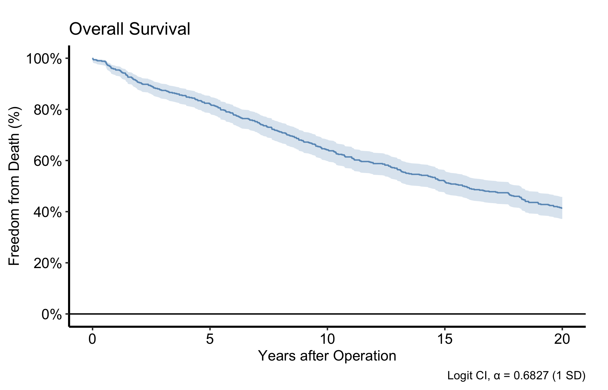
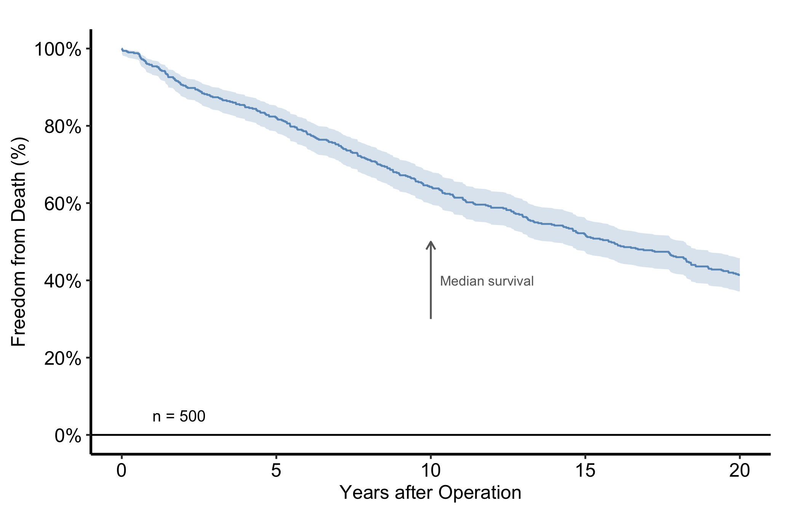
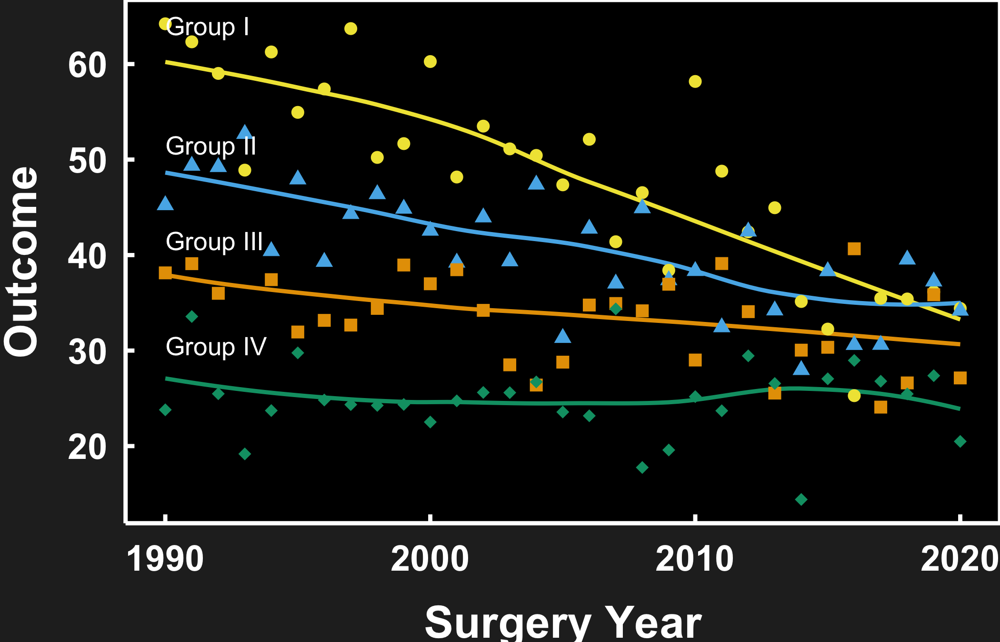
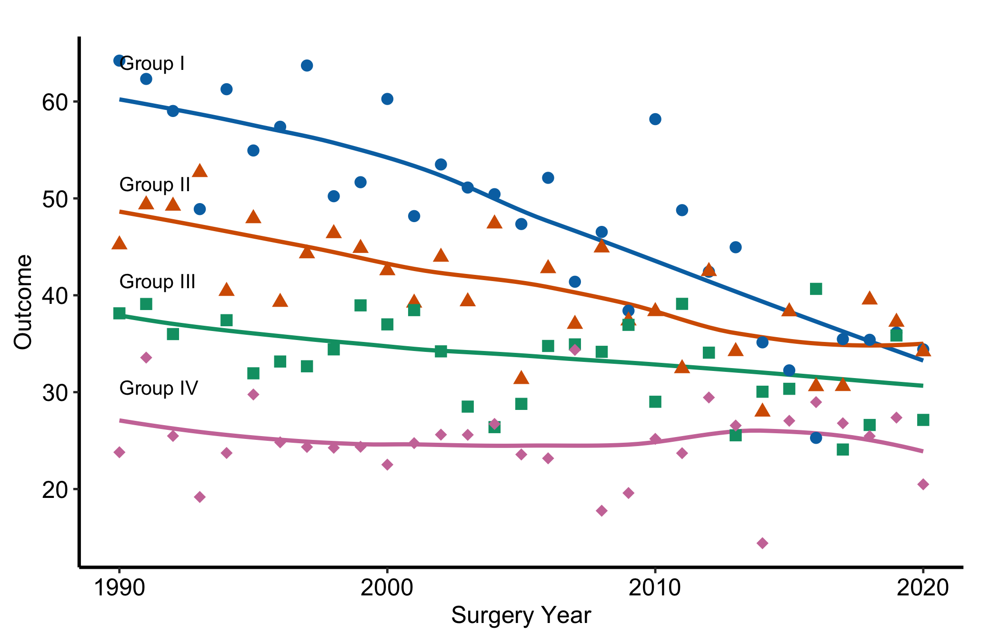
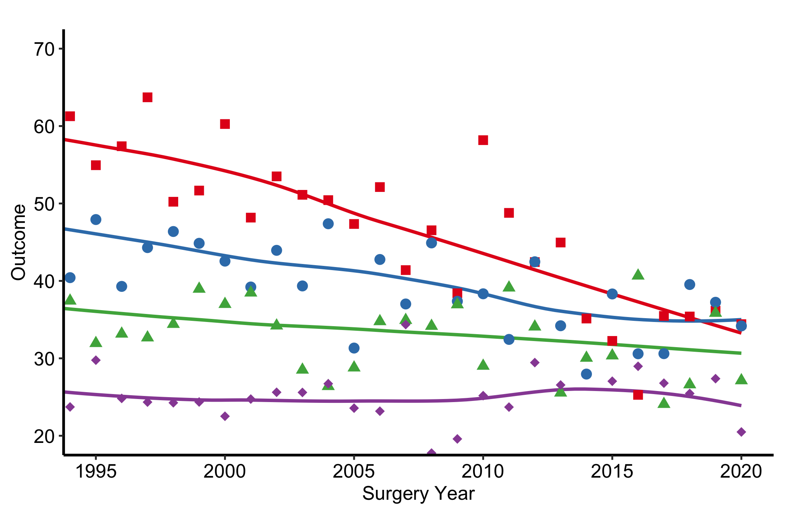
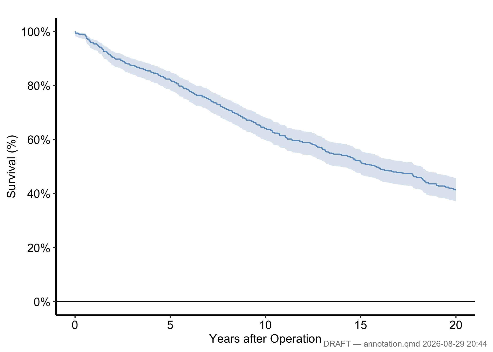
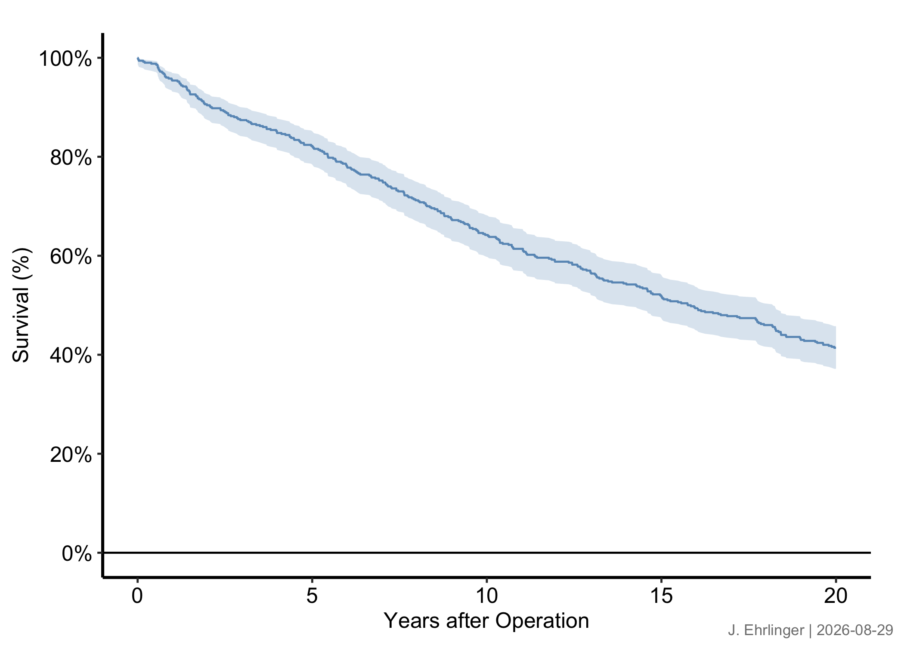

dta_km <- sample_survival_data(n = 500, seed = 42)
km <- hv_survival(dta_km)37 Annotating figures and formatting axes
Every hvtiPlotR (Ehrlinger 2026) plot renders as a bare ggplot object: no labels, annotations, or cropping are applied by the constructor. You add those by chaining + layers. This chapter covers axis/title text (labs()), in-panel annotations (annotate()), viewport cropping (coord_cartesian()), and draft footnotes (make_footnote()).
37.1 When to use it
A bare plot shows the data correctly but says nothing about what the data mean. The decorations in this chapter are how you turn a correct plot into one a reader can interpret without your narration. You add labels so the axes name real quantities, an annotation so a sample size or a landmark is on the panel rather than in the caption, a crop so the eye lands on the region that carries the story, and, while the work is still in progress, a draft footnote so nobody mistakes a working figure for a final one.
Think of it as the last pass before a figure leaves your hands. The plot is right; now make it legible. Each tool below is small, and you reach for them in combination: a labelled, cropped curve with an n = callout is the everyday case. We build one base Kaplan-Meier plot and decorate it throughout, so you can see each layer added to the same starting point.
37.2 Labels with labs()
labs() sets axis labels, title, subtitle, legend title, and caption. Set them on the rendered plot so they can be overridden per project.
plot(km) +
scale_color_manual(values = c(All = "steelblue"), guide = "none") +
scale_fill_manual(values = c(All = "steelblue"), guide = "none") +
scale_y_continuous(breaks = seq(0, 100, 20),
labels = function(x) paste0(x, "%")) +
scale_x_continuous(breaks = seq(0, 20, 5)) +
coord_cartesian(xlim = c(0, 20), ylim = c(0, 100)) +
labs(
title = "Overall Survival",
x = "Years after Operation",
y = "Freedom from Death (%)",
caption = "Logit CI, α = 0.6827 (1 SD)"
) +
theme_hv_manuscript()
37.3 Annotations with annotate()
annotate() places text, segments, or arrows at fixed data coordinates: a sample-size callout in a corner, or an arrow pointing to an event.
plot(km) +
scale_color_manual(values = c(All = "steelblue"), guide = "none") +
scale_fill_manual(values = c(All = "steelblue"), guide = "none") +
scale_y_continuous(breaks = seq(0, 100, 20),
labels = function(x) paste0(x, "%")) +
scale_x_continuous(breaks = seq(0, 20, 5)) +
coord_cartesian(xlim = c(0, 20), ylim = c(0, 100)) +
labs(x = "Years after Operation", y = "Freedom from Death (%)") +
annotate("text", x = 1, y = 5,
label = paste0("n = ", nrow(dta_km)),
hjust = 0, size = 3.5) +
annotate("segment", x = 10, xend = 10, y = 30, yend = 50,
arrow = arrow(length = unit(0.2, "cm")), colour = "grey40") +
annotate("text", x = 10.3, y = 40,
label = "Median survival", hjust = 0, size = 3, colour = "grey40") +
theme_hv_manuscript()
37.4 Naming series without a legend
A finished CORR figure carries no legend. Not in a manuscript, not on a slide. theme_hv_manuscript(), theme_hv_poster(), theme_hv_ppt_light() and theme_hv_ppt_dark() all set legend.position = "none", so the groups get named on the panel instead, with annotate(), where the reader’s eye already is.
The word doing the work there is finished. A draft you are reading yourself is a different object with a different reader, and a key is often the faster way to see what you have. The same goes for a figure whose series cannot sensibly be named on the panel, six simulated subject identifiers being the case in Random Hazard Forests. Reach for hv_legend_inside() there, applied after the theme so its position wins, and drop the key when the figure goes into the paper. A key sends that eye out to the margin and back once per curve. On a slide that is most of the fifteen seconds you had.
Two things make a direct label read as part of the figure rather than as one more object sitting on it.
The first is placement. Put the label beside the series it names, at a point where that series is clearly on its own. The four groups below fan out at the left edge and converge later, so the left edge is where the labels go.
The second is colour, and it is the one people get wrong. The label takes the theme’s ink, the same colour the theme already gives the axis text and the axis line. White on a dark slide. Black on a light slide and in a manuscript. Not the colour of the series it names.
dta_trends <- sample_trends_data(n = 600, seed = 42)
p_trends <- plot(hv_trends(dta_trends))
p_trends +
hv_ppt_series(mode = "dark", base_size = 18) +
labs(x = "Surgery Year", y = "Outcome") +
annotate("text",
x = 1990,
y = c(64, 51.5, 41.5, 30.5),
label = c("Group I", "Group II", "Group III", "Group IV"),
colour = "white", size = 4.5, hjust = 0) +
theme(plot.background = element_rect(fill = "grey15", colour = NA))
annotate() takes vectors, so the four labels are one call rather than four. The single colour = "white" recycles across all of them, which is the whole point: one ink for every label on the panel.
Now the same figure for a journal page. The labels do not move and their text does not change. Only the ink does, following the theme from white to black.
p_trends +
scale_colour_manual(values = hv_ppt_palette("light")) +
scale_shape_manual(values = c(16, 17, 15, 18)) +
labs(x = "Surgery Year", y = "Outcome") +
annotate("text",
x = 1990,
y = c(64, 51.5, 41.5, 30.5),
label = c("Group I", "Group II", "Group III", "Group IV"),
colour = "black", size = 3.5, hjust = 0) +
theme_hv_manuscript()
Neither scale needs guide = "none" here. The theme has already switched the legend off, and that is the house default rather than something you opt into per figure.
Colouring each label to match its curve looks like the helpful thing to do, so it is worth saying plainly why it is not. A coloured label reads as data. It becomes one more series in the panel, and it inherits every weakness the colour already has: it flattens on a projector, and it collapses to a mid-grey in a black-and-white printout, which is exactly the case where the label was doing the most work. Annotation is frame, not data, so it takes the frame’s colour.
Which also means hv_ppt_palette() is not where you get an annotation colour, even though it is close at hand and holds the series colours. The colour chapter covers what it is for, and slides and presentations has the deck-wide decorator that assigns those colours in the first place.
37.5 Cropping with coord_cartesian()
coord_cartesian() crops the viewport without dropping data, so any fit computed on the full range is preserved. This is the distinction that trips up nearly everyone at some point. coord_cartesian(xlim = ...) is a camera: it zooms in on a region while every point and every fitted line still knows about the data outside the frame. scale_x_continuous(limits = ...) is a filter: it removes the out-of-range data before anything is drawn, so a LOESS smooth or a regression line is now fitted to a subset and can shift, sometimes dramatically. When you only want to crop the view, reach for coord_cartesian() every time.
dta_trends <- sample_trends_data(n = 600, seed = 42)
p_base <- plot(hv_trends(dta_trends))
p_base +
scale_colour_brewer(palette = "Set1", name = "Group") +
scale_shape_manual(
values = c("Group I" = 15, "Group II" = 19,
"Group III" = 17, "Group IV" = 18),
name = "Group"
) +
labs(x = "Surgery Year", y = "Outcome") +
coord_cartesian(xlim = c(1995, 2020), ylim = c(20, 70)) +
theme_hv_manuscript()
37.6 Draft footnotes with make_footnote()
make_footnote() stamps the bottom-right corner of the current graphics device using grid. Call it after print()ing a plot to flag a work-in-progress figure. The ggplot object itself is untouched, so the final ggsave() output is clean.
# During analysis # For publication
print(p) ggsave("fig1.pdf", p, ...)
make_footnote("R/analysis.R") # <- no footnote callBuild any figure, then print() it and call make_footnote() with the source path. The default stamp appends the current date and time, which is the whole point of a draft footnote: it tells you which run of the analysis a printout came from.
The two figures below pin that stamp to a fixed string instead, because a live clock would redraw them on every render and make the committed figure cache churn for no reason. In your own work leave the default alone and let it stamp the real time.
p_draft <- plot(km) +
scale_color_manual(values = c(All = "steelblue"), guide = "none") +
scale_fill_manual(values = c(All = "steelblue"), guide = "none") +
scale_y_continuous(breaks = seq(0, 100, 20),
labels = function(x) paste0(x, "%")) +
scale_x_continuous(breaks = seq(0, 20, 5)) +
coord_cartesian(xlim = c(0, 20), ylim = c(0, 100)) +
labs(x = "Years after Operation", y = "Survival (%)") +
theme_hv_manuscript()
book_stamp <- "2026-08-29 20:44" # your own work: drop this and the timestamp
# argument, and let make_footnote() stamp now
print(p_draft)
make_footnote(paste("annotation.qmd", book_stamp), timestamp = FALSE)
Pass any string as text and set timestamp = FALSE for a stable analyst tag.
book_date <- "2026-08-29" # your own work: use Sys.Date()
print(p_draft)
make_footnote(
text = paste("J. Ehrlinger |", book_date),
timestamp = FALSE,
prefix = ""
)
For publication, write the ggplot object directly with ggsave() and simply omit the make_footnote() call. The saved file carries no stamp.
37.7 Pitfalls
coord_cartesian()zooms,scale_*(limits =)drops. This is the one to memorise. If you set limits on the scale to “zoom in,” you have silently thrown away the data outside the window, and any smoother, ribbon, or summary refits to what is left. The curve you see is then a fit to a subset, not the region of a fit to everything. Usecoord_cartesian()when you want the same fit, viewed closer. Use a scale limit only when you genuinely mean to exclude data, and say so.- An annotation coloured to match the series it names. The label then reads as one more piece of data rather than as part of the figure’s frame, and it fails in every place the series colour fails: flattened by a projector, collapsed to grey by a black-and-white printer. Take the theme’s ink instead, white on a dark slide and black everywhere else, so every label on the panel matches the axis and each other.
- A draft footnote left on a final figure.
make_footnote()stamps the device, not the ggplot object, which is the safe design: the stamp cannot survive into aggsave()file unless you deliberately keep printing and stamping. The failure mode is human, not technical. You screenshot a working figure mid-analysis, the file path and timestamp ride along, and it ends up in a slide deck. Keep draft stamps to the analysis session and let the publication path be the plainggsave().